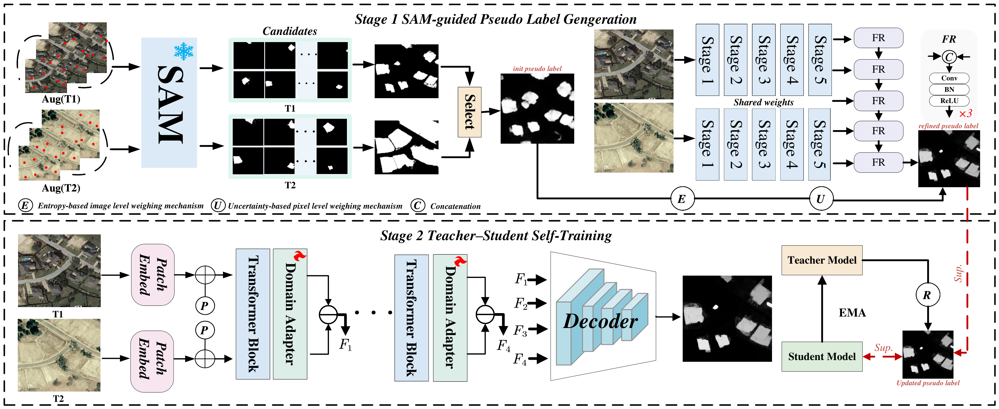

About Me
I am currently an undergraduate student at Dalian Maritime University. During my undergraduate studies, I have primarily carried out research training under the guidance of Prof. Jiqing Zhang. Beyond research, I also enjoy programming ⌨, writing ✍, and exploring delicious ☕.Education
- 2023 - Present, Dalian Maritime University, Dalian, China.
Research Interests
My current research interests include Deep Learning, Computer Vision, and Neural Network Design. In particular, I focus on:
- Camouflaged Objects Detection and Salient Objects Detection
- Visual multi-modal large model and multimodal representation learning
- Weakly supervised learning for remote sense change detection
News
- 2024: National Scholarship for Undergraduate Students